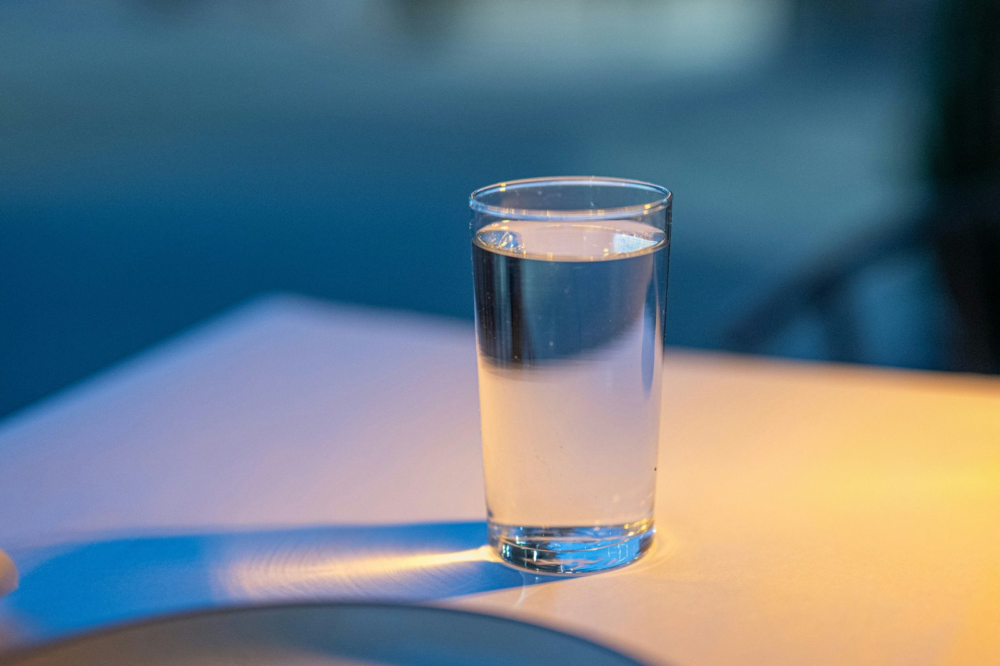

Metabolism refers to all the chemical processes your body uses to convert food into energy. A faster metabolism means you burn more calories at rest and throughout the day. While genetics plays a role in your baseline metabolic rate, there are several evidence-based strategies to meaningfully increase how many calories you burn.
What determines your metabolic rate?
Your total daily calorie burn (TDEE) is made up of:
- BMR (Basal Metabolic Rate) — 60–75% of TDEE. Calories burned at rest.
- TEF (Thermic Effect of Food) — 8–15% of TDEE. Calories burned digesting food.
- Exercise activity — 5–15% of TDEE for most people.
- NEAT (Non-Exercise Activity Thermogenesis) — 15–30% of TDEE. All movement outside formal exercise.
1. Build muscle through resistance training
Muscle tissue burns approximately 13 kcal per kg per day at rest, compared to about 4.5 kcal per kg for fat tissue. This means increasing your muscle mass directly raises your BMR. A consistent resistance training programme can increase BMR by 7–8% — meaning a person burning 2000 kcal/day might burn an additional 140–160 kcal daily just from added muscle mass.
2. Eat enough protein
Protein has a thermic effect of 20–30% — meaning 20–30% of the calories from protein are burned just digesting it. Compare this to carbohydrates (5–10%) and fat (0–3%). Increasing protein to 25–30% of your total calories can boost your metabolic rate by 80–100 kcal per day. High protein intake also preserves muscle mass during calorie restriction, preventing the metabolic slowdown that often accompanies dieting.
3. Drink cold water
Drinking water temporarily boosts metabolism by 24–30% for 1–1.5 hours. Cold water has a slightly greater effect because the body uses energy to heat it to body temperature. Studies suggest drinking 500ml of water increases calorie burn by approximately 23 kcal. While modest, consistent hydration throughout the day adds up.
4. Increase NEAT (non-exercise movement)
NEAT is the single most variable component of your metabolism and can differ by up to 2000 kcal/day between individuals with similar body compositions. Walking more, taking stairs, standing at a desk, and fidgeting all contribute to NEAT. Adding 6000–8000 steps per day burns an additional 250–400 kcal — the equivalent of a moderate workout — with minimal effort or time investment.
5. Get adequate sleep
Sleep deprivation significantly impairs metabolic function. Studies show that sleeping 5 hours versus 8 hours reduces the proportion of weight lost as fat during a calorie deficit by 55%, increases hunger hormones (ghrelin) by 15%, and decreases fullness hormones (leptin) by 15%. Consistently poor sleep can reduce BMR by 5–20%.
6. Drink coffee or green tea
Caffeine temporarily boosts metabolism by 3–11% and fat oxidation by up to 29% in lean individuals. Green tea contains both caffeine and EGCG (epigallocatechin gallate), a compound that works synergistically with caffeine to increase fat burning. The effects are modest (an extra 80–150 kcal/day) but real.
7. Eat spicy foods
Capsaicin — the active compound in chilli peppers — can temporarily increase metabolic rate and fat oxidation. Studies show consuming capsaicin increases calorie burn by approximately 50 kcal per meal. The effect is small and tolerance builds quickly, but chilli and spice can be a useful addition to a metabolism-focused diet.
8. Avoid very low-calorie diets
Eating too few calories for extended periods causes significant metabolic adaptation — your body reduces BMR by 15–25% to conserve energy. This is why crash diets eventually stop working. Keeping your calorie deficit moderate (300–500 kcal below TDEE) and including diet breaks at maintenance calories every 4–8 weeks can partially prevent metabolic adaptation.